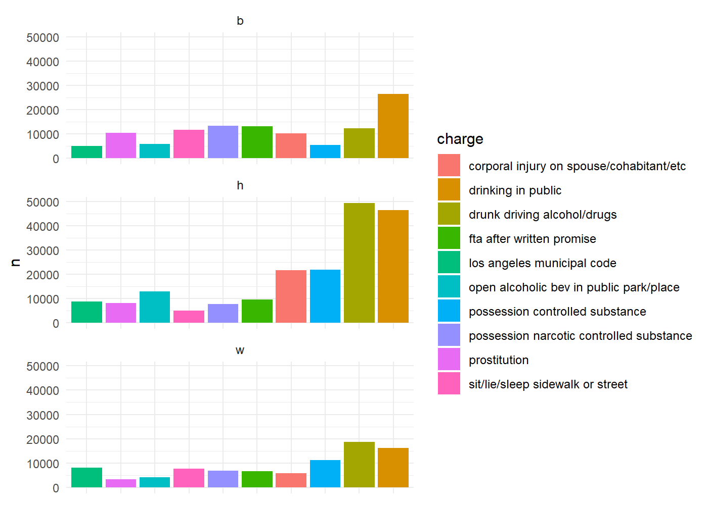
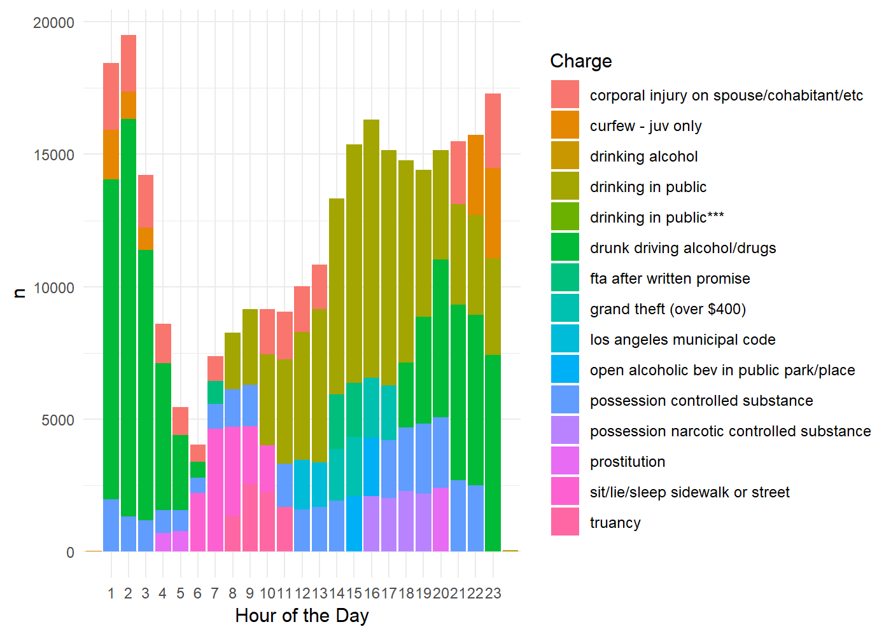
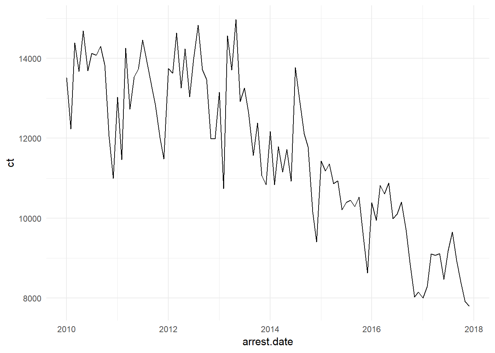
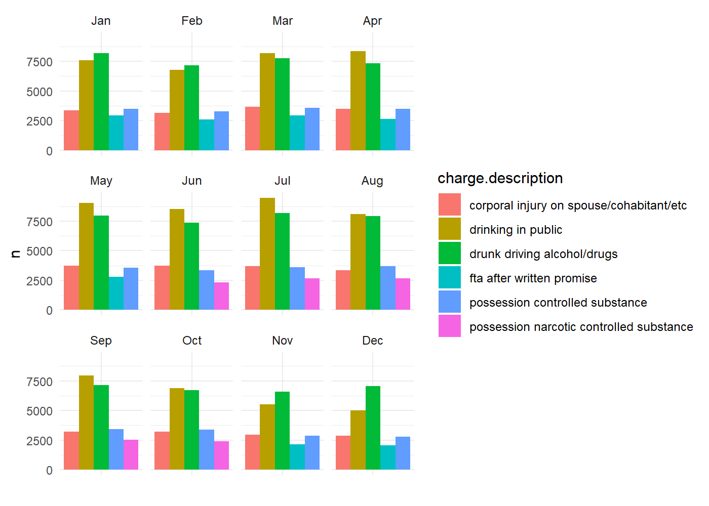
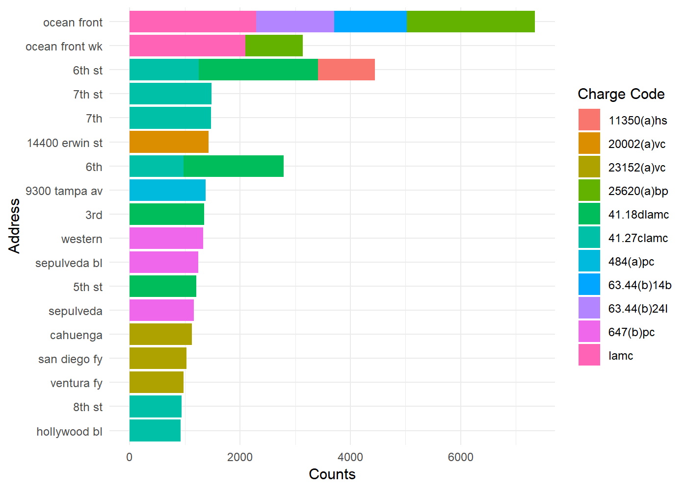
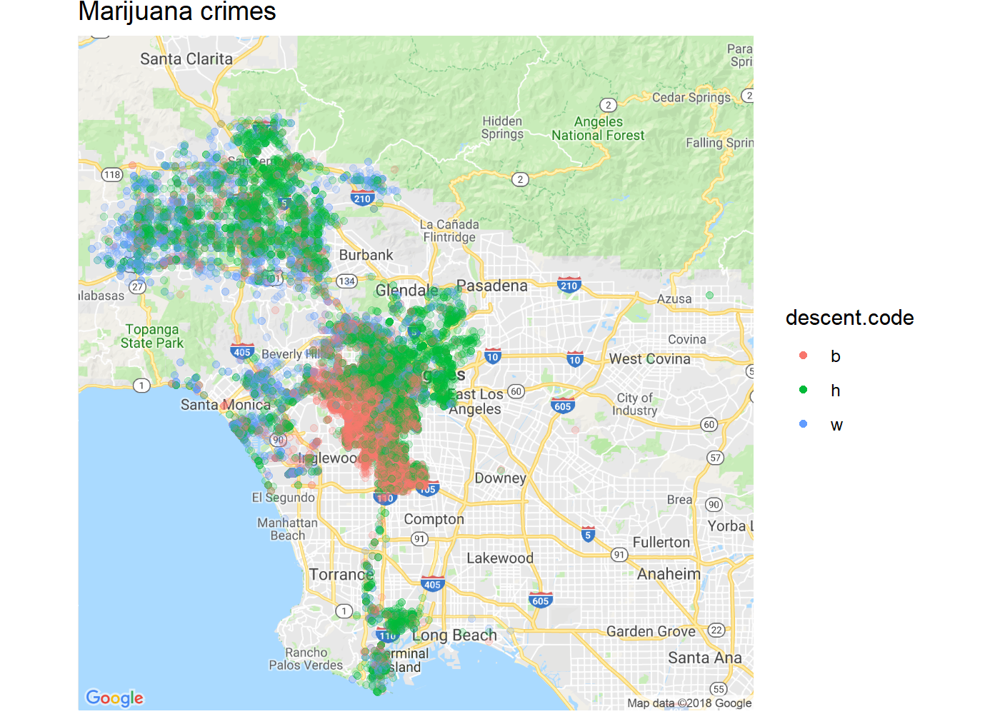
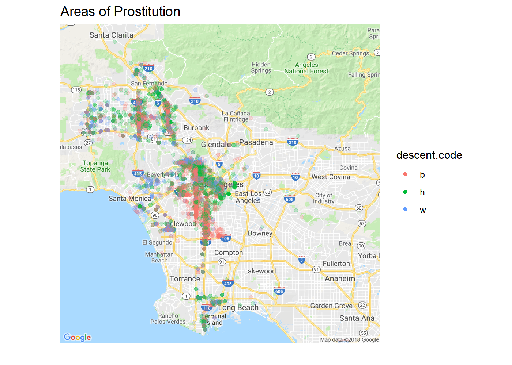
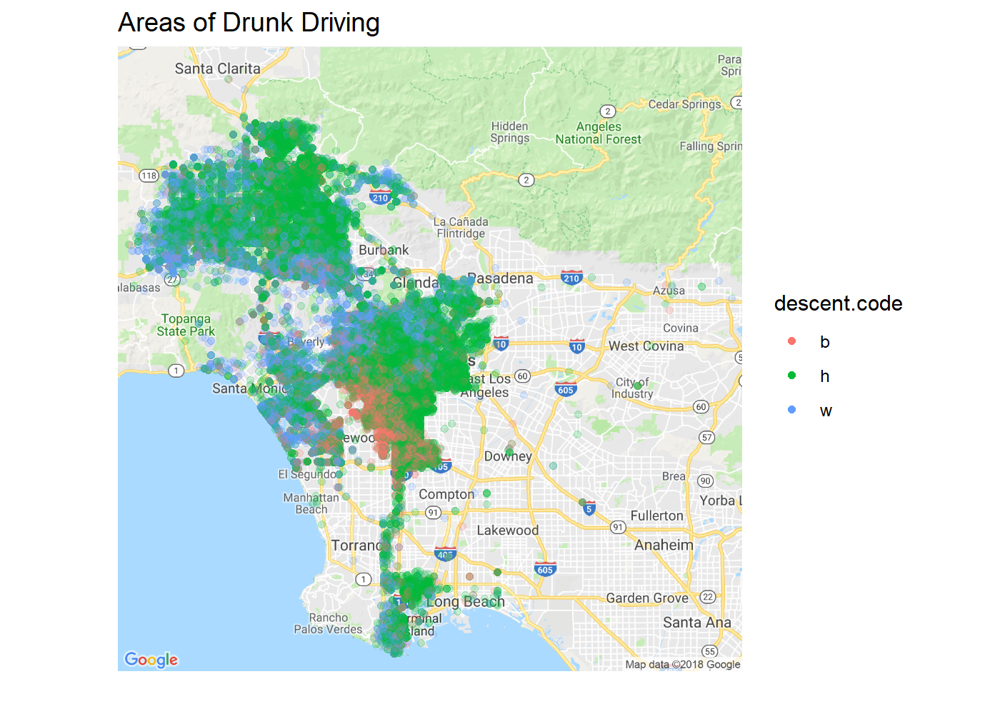
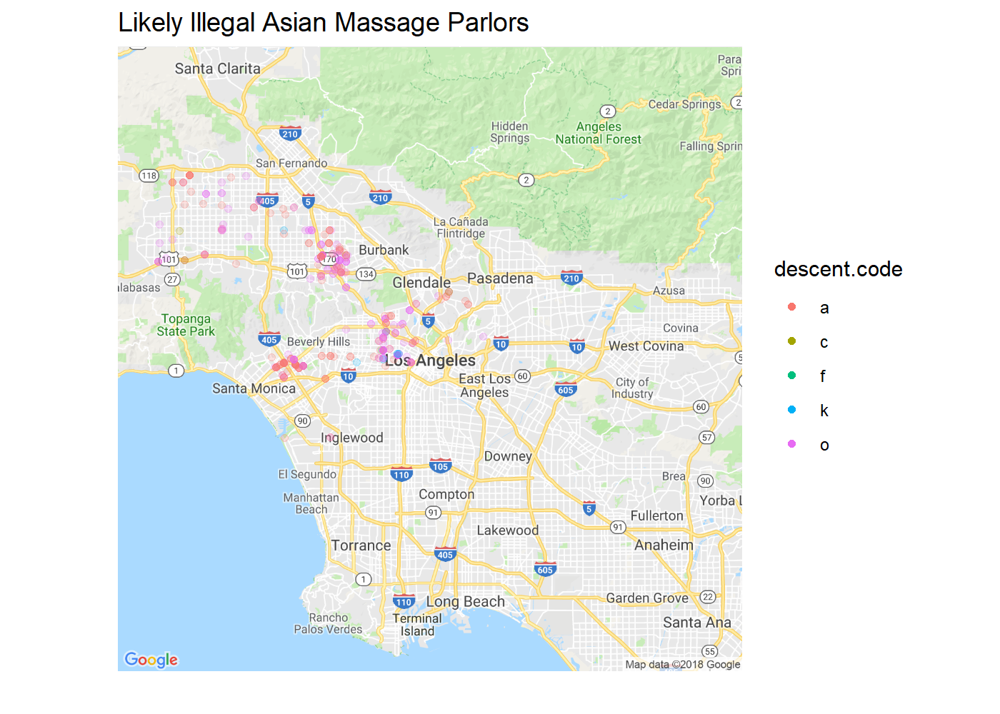

Data Analysis: Crime in LA
- Crime in LA Since 2010
- Crimes Throughout the Day
- Streamgraph of Crime Counts from 2010-2018
- Closer look at Seasonality of Crimes
- On Which Streets Do Crimes Occur? And Which Kinds of crimes?
- Mapping Crime in LA
- Where are marijuana related arrests?
- Mapping Prostitution
- Drunk Driving
- Illegal Asian Massage Parlors
- Conclusion
Crime in LA Since 2010
The City of Los Angeles has provided the public with a large dataset consisting of over 1.1 million crime reports (rows) and 17 variables from 2010-2018. In this blog post, we’re going to take a look to see if we can better understand any patterns or trends in crimes in Los Angeles.
You can obtain the dataset here
Here is what the table looks like. We will need to do some light cleaning to take advantage of the geo-locations, dates, and times.
##
Read 98.8% of 1184331 rows
Read 1184331 rows and 17 (of 17) columns from 0.186 GB file in 00:00:03
## Observations: 1,184,331
## Variables: 17
## $ report.id <int> 111421932, 121801235, 150604240, 1507...
## $ arrest.date <chr> "07/02/2016", "12/18/2016", "01/03/20...
## $ time <int> 1845, 940, 1315, 2230, 1309, 1650, 21...
## $ area.id <int> 14, 18, 6, 7, 14, 14, 15, 15, 19, 21,...
## $ area.name <chr> "Pacific", "Southeast", "Hollywood", ...
## $ reporting.district <int> 1411, 1822, 669, 721, 1427, 1443, 153...
## $ age <int> 50, 38, 43, 20, 60, 40, 50, 17, 17, 4...
## $ sex.code <chr> "M", "F", "M", "F", "M", "F", "F", "F...
## $ descent.code <chr> "H", "B", "O", "B", "W", "H", "A", "H...
## $ charge.group.code <int> 24, 24, 24, 6, 17, 24, NA, 4, NA, 24,...
## $ charge.group.description <chr> "Miscellaneous Other Violations", "Mi...
## $ arrest.type.code <chr> "M", "M", "M", "M", "M", "M", "M", "M...
## $ charge <chr> "LAMC", "LAMC", "71.02LAMC", "484(A)P...
## $ charge.description <chr> "LOS ANGELES MUNICIPAL CODE", "LOS AN...
## $ address <chr> "BROOKS", "300 W CENTURY ...
## $ cross.street <chr> "OCEAN FRONT", "", "SANTA MONICA", ""...
## $ location <chr> "(33.9918, -118.4791)", "(33.9456, -1...
#Top Crimes by Ethnicity
Now that we’ve cleaned up some of the columns, let’s start by looking at counts of crimes. We will only consider the top 10 most common crimes and look at the counts by ethnicity. ‘b’ means ‘black,’ ‘w’ means ‘white,’ and ‘h’ means ‘hispanic.’

We can see some interesting differences in counts. For example, prostitution crime reports involve white suspects at about half the frequency as black suspects. Corporal injury on spouse seems to occur much more frequently for hispanic suspects. Drunk driving seems to be a major problem for hispanics, relative to whites or blacks; ditto for drinking in public. I’m going to go out on a limb here and speculate that the higher number alcohol-related crimes of hispanics is partly why the spousal injury counts are so high.
Sitting/sleeping on the sidewalk is how the LAPD classifies homelessness: we can see that the frequency of homelessness for blacks is much higher than for hispanics.
Crimes Throughout the Day
It might be interesting to see which crimes are most common at each hour of the day. For example, what kind of crimes are more likely to be committed at 8 a.m. versus 8 p.m? We will confine ourself to the top four crimes in each one-hour bin of the day.

From this we can see that drunk driving makes up a large portion of late night crime, and that spousal abuse and drug-related crimes are common. Also, juveniles at this late hour would be flouting their curfews. Prostitution picks up around 4-5 a.m.
As we get into the early morning, from 6-10 a.m., we see more homelessness-related crimes. Also at this point crimes are not being reported/committed very often relative to the peak crime time of about 2 a.m. Once school starts around 8 a.m., we can see truancy as a major crime (students skipping school).
At midday, drinking in public becomes more frequent, and so does spousal abuse (again, there is likely a strong connection there).
In the late afternoon, drinking in public increases and so does narcotics possession.
In the evening around 6-7 p.m. drunk driving appears again and so does narcotics possession. Around 8, prostitution picks up again.
In the late evening we can again see drunk driving and curfew related reports both increasing.
Streamgraph of Crime Counts from 2010-2018
If you haven’t seen a streamgraph before, they can be a little tricky to interpret. Basically you can imagine each type of crime as a “river” that expands or contracts over time in proportion to the number of that type of crime. This gives you a way of comparing, for each type of crime, how it has increased or decreased over time. One that decreases over time will get thinner, while one that increases will get wider.
You can also look at the top left corner to get a pop-up of the exact count of the type of crime at that specific time.
Streamgraphs are nice for finding seasonal patterns in the frequency of events. We can see that crime is seasonal: the entire stream gets wider around July each year. We can see that part of that expansion is due primarily to drinking in public (in blue) that is expanding each July.
Overall we see a decreasing trend in total crimes. Specifically after about October 2014, total crime counts decrease. Nevertheless, some crimes have increased: for example sitting/sleeping on the street was relatively rare before 2014, but then became more common. LA municipal code violations peaked in July 2011, but are relatively rare now.
To see the decrease in total reported crimes, we can use a more traditional line graph.

Contrary to what Trump would have you believe, it appears as though crimes (at least those reported) are decreasing in the past decade. And this is in US city with one of the highest percentages of immigrants (roughly 35% of the population in LA County is an immigrant, or 3.5 million people). If anything, as more immigrants have arrived in the past decade, LA has been getting safer.
Closer look at Seasonality of Crimes
Are there patterns in the types of crimes committed in different months of the year? 
Drunk driving peaks in January. Not surprisingly drinking in public peaks in the summer months and narcotic controlled substances as well. Peas and carrots, I suppose. I’m going to speculate that the FTA (Failure to Appear [in court]) appearing in the off-summer months is partly those people who were caught drinking/possessing drugs during the summer! But that’s just a wild guess.
Also, now that weed is legalized, I’m sure a lot of those narcotics cases will disappear. Those are huge financial strain on the legal system.
On Which Streets Do Crimes Occur? And Which Kinds of crimes?
Here is a list of the most common charge codes to help interpret the graph below:
- 41.18 (d) LAMC- Sitting on public sidewalk
- Most people who get arrested for DUI in California ultimately get charged with two separate misdemeanor offenses: driving under the influence of alcohol, under California Vehicle Code 23152(a) VC, and. driving with a blood alcohol content of 0.08% or greater, pursuant to California Vehicle Code 23152(b) VC
- LAMC 41.27(c) Drinking in public -273.5(a) PC makes it illegal to injure a spouse, cohabitant or fellow parent in an act of domestic violence - 11350(a) HS makes it illegal to possess a controlled substance without a valid prescription.
- PC 853.7, any person who willfully violates his or her written promise to appear in court is guilty of “failure to appear as misdemeanor”
- 11377 HS makes it a crime to possess methamphetamines for personal use without a valid prescription.
- 647(b) PC, it is unlawful to engage in or solicit prostitution
- 25620(a)BP, Open Container
- 20002(a)vc, Misdemeanor hit and run
- 484(a)pc, petty theft/shoplifting

Ocean Front is the area near Venice beach, popular with tourists. It makes sense a lot of minor, alcohol-related crimes appear there (open container: 25620bp). Lot sof DUIs are happening on Cahuenga and the 405 Freeway (I believe FY should be FW). Prostitution is primarily happening on Sepulveda and Western.
Almost all the downtown streets (5th, 6th, 7th) are hotspots for homelessness (41.18dlamc: sitting/lying on public sidewalk). There are entire blocks in downtown LA that are essentially de facto homeless camps.
Interesting that 14400 Erwin St is a hotspot for misdemeanor hit and runs (20002(a)vc). These are hit and runs that only involve property damage. A quick Google search of this address reveals that this is near the Erwin Street Mall and the Van Nuys Courthouse. This might possibly be due to bad traffic infrastructure. It would be worth looking into, along with the high rates of shoplifting at 9300 Tampa Ave (near the Northridge Fashion Center).
Where are marijuana related arrests?

Marijuana-related reports are fairly clearly separated by race. Whites tend to get busted near Santa Monica and in the hills in the north, while blacks are densely in the center and hispanics seem to get busted near Long Beach, downtown, and in the hills.
Mapping Prostitution
For this one, there isn’t enough information to tell whether the race info is from the person soliciting or the person offering prostitution, so take this with a grain of salt.

There seem to be three main streets where blacks in particular are getting caught for prostitution.
Drunk Driving

When it comes to drunk driving, we can see hispanics disproportionately represented. This suggests to me that more could be done to reduce this problem in areas with a high proportion of hispanic residents. For example, offering better public transportation that is open later in the evening (or during the hours shown above when most DUIs occur).
Illegal Asian Massage Parlors
Just for fun, let’s see if we can infer where there are likely to be illegal Asian massage parlors. We will filter for the charge ‘massage technician w/o permit’ and for all ethnicities that are not white, black, or hispanic. 
The descent codes used by the LAPD are the following:
A - Other Asian C - Chinese F - Filipino G - O - Other
It appears most of these are happening in the Universal City/North Hollywood, Westwood/UCLA, and Koreatown areas.
Conclusion
Despite what you might hear from some policitians, crime in the USA’s 2nd largest city seems to be decreasing since 2010. The sheer number of crimes will also likely continue to decrease as marijuana-related crimes disappear as the result of legalization. The number of violent crimes also seems to be decreasing. And this has all happened during the past decade, a time of relatively high immigration rates in California.
It also appears as though a lot of time, money, and resources are being spent on catching people drinking and driving. More systemic solutions should be considered to alleviate this problem (besides simply more policing), particularly in hispanic communities, where the rates of drunk driving are particularly high. Public transportation, for example, could make a huge impact in reducing this issue.
Finally, the illegality of public drinking seems worthy of reevaluation, especially when one considers that in other countries with higher per capita alcohol consumption (Germany, for example) it is perfectly OK to drink in public. How much taxpayer money is being wasted on paying police to sit around Venice Beach and hand out open container tickets? It’s always seemed like this and most traffic violations exist as a way for cities to generate extra revenue in the form of fines and tickets. The poor are particularly affected by this because these parking violation tickets make up a disproportionately high amount of their income.
In my opinion, the fines for most of these non-violent infractions (speeding, open containers, illegal parking) represent a kind of regressive taxation and ought to be based on one’s income, as is done in Finland, for example. There, once a policeman has pulled you over, he checks your identity in a national taxpayer database and an algorithm determines the appropriate fine. In one case, a Finnish business man caught speeding was forced to pay a 54,000 EU fine. You can read more about the Finnish system in The Atlantic .
For now, here’s a snippet:
Finland’s system for calculating fines is relatively simple: It starts with an estimate of the amount of spending money a Finn has for one day, and then divides that by two—the resulting number is considered a reasonable amount of spending money to deprive the offender of. Then, based on the severity of the crime, the system has rules for how many days the offender must go without that money. Going about 15 mph over the speed limit gets you a multiplier of 12 days, and going 25 mph over carries a 22-day multiplier.
Most reckless drivers pay between €30 and €50 per day, for a total of about €400 or €500. Finland’s maximum multiplier is 120 days, but there’s no ceiling on the fines themselves—the fine is taken as a constant proportion of income whether you make €80,000 a year or €800,000.